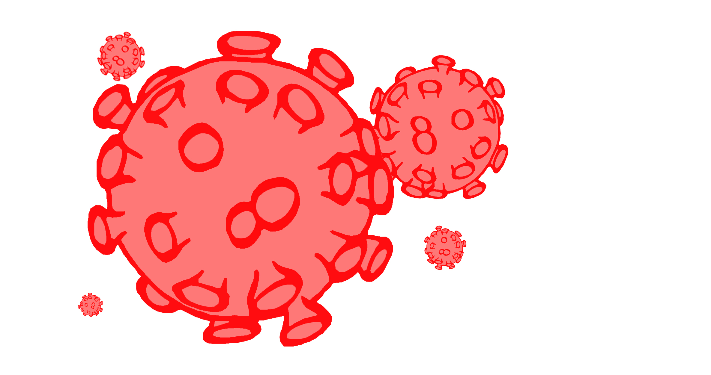

HIV/Aids is a communicable disease that can be contracted through sexual contact or the passage of bodily fluids from situations like passing needles after drug use. When aids is in high development in the immune system, it breaks down and fights CD4 cells which are crucial for fighting diseases. Without CD4 cells, There is a greater risk of death from infections becuase there is nothing to fight the disease. Since aids has been an issue, over 70 million people have come in contact with the disease and over 35 million people have died because of it. Our SMASH Conatgion project on Aids/HIV provides data and solutions to how Aids/HIV works based off of everything we have learned over the past 5 weeks.

Website by Jabari Cook, Aaron Harvey, Kenneth Rogers, Jawann Beverly